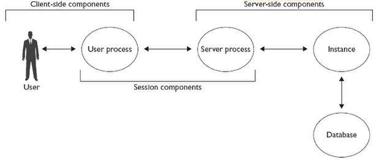
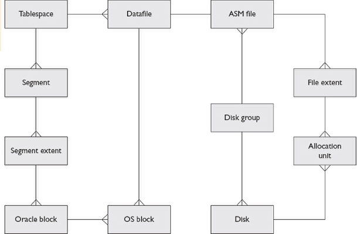

The processes that make up the instance are know as background
processes.
The memory structures which are implemented in shared memory segments
are know as System Global Area( SGA ). This components could be resized
(with limits) while the instance is running.
User session consist in two parts: a user process running locally to the
user machine that connect with the second part an instance on the server.
This connection it's usually in a LAN and uses Oracle Net protocol layered
on top of an industry-standard protocol (usually TCP). This architecture
user-process/server-process implements the client-server architecture.
Client generate SQL and server execute SQL. The server processes are
sometimes referred as foreground processes. Associated with every server
process are a non shareable (then private) area memory called Program
Global Area ( PGA ). Note that background processes also have a PGA.
The dba can define an upper limit for the total of all pga's and Oracle
manage the allocation of this.
Oracle could manage totally automatic the overall memory assigned for
both SGA and PGA. Alternative, dba can control memory allocations himself.
As an in-between technique the dba can define certain limits on what the
automatic management can do.

The physical structures that make up an Oracle database are: datafiles,
online redo log and the control files.
The abstraction of logical storage from physical storage is part of the RDBMS
standard. The only one that can see all of this 2 worlds is the dba.
Data is stored in datafiles that has not limit in number or size of them.
The abstraction of the datafiles permit add , move , etc. this meanwhile
the developer or sql does not affected. The relation between physical and
logical is mantained in data dictionary. The problem is that the data
dictionary is a set of tables stored within the database, then we have a
recursive problem: the instance need to be aware of the physycal and
logical structures of the database, but the information reside in the
database. The solution of this problem lies in the staged startup process
(chapter 4) and the control file (lo del control file lo digo yo)
Other of the requirements of th RDBMS is that the data must not be lose and then must be backed up.and furthermore any change between backups must be captured. Oracle use the redo log to capture this changes. Redo log consist in a sequential record of all change vectors applied to data. A change vector is the alteration made by a DML statement (DML?) . Then oracle use a backup and apply a redo log at that backup to create a forward recovery process.
The controlfile store the details of the physical structures of the DB and is the starting point for the link to the logical structures.
With single-instance we have one instance-one database. Wtih distributed systems we have various possibilities:
Real Application Cluster (RAC): Multiple instances open one database.
Streams:Multiple Oracle servers propagate transactions between each other.
Data guard:A primary database updates one or more standby databases to keep them all synchronized.

An oracle instance consist in a block of shared memory (SGA)
and background processes. At minimum SGA contain three data
structures: Database buffer cache default pool, log buffer, shared pool.
Optionally also contain: large pool, java pool, streams pool, additional
buffer cache pools.
The database buffer cache.
It's a Oracle's work area for executing SQL. When changes succes in data, user's
session don't do directly on disk, do on database buffer cache. The blocks changed
remains on memory and some time after are writted on disk (the blocks continue
to reside in memory).Queryng data also need to goes to cache, if the data was
previously, perfect, if not it's take it from disk and put in the buffer cache. The
server take the blocks of the rows selected from disk to buffer cache and after it
transferred into the session's PGA for further processiong.
The term block is important, the datafiles are formated into fixed-sized blocks. The
database buffer is formated into memory buffers, each sized top hold one block.
A buffer storing a block whose image in the cache is not the same on disk is often
referred to as a dirty buffer.
Not exist correlation between the frequency of updates to a buffer (or the number of
commits) and when it gets written back to the datafiles.
The size of the database buffer cache can be adjusted dynamically and
can be managed automatically.
The log Buffer
The log buffer is a small short-term staging area for change vectors
before they are written to the redo log on disk.
The redo log is the database guarantee that the data will never be lost
: Whenever a data block is changed the change vectors applieds to the
blocks are written out to the redo log. Redo is not written directly to the
redo log files by server session server process. Instead sessions write
redo to redo log buffer, in memory. The redo log buffer that contains
vector changes from many transactions/users is then writte out to the redo
log files.
The step to writte from redo log buffer to disk is did it nearly real time, and
when a session issue a commit statement, the log buffer write really does
happen in real time. The writes are done by the log writer background process
(LGWR).
Note: What does the lgwr on commit? It flush the entire log buffer to disk. What
does the dbwn do on commit? Nothing.
The log buffer is small (few megabytes at most) and made it more big could
generate bad performance. The dafault is choose by Oracle in function of the
cpu number.
How works a commit: when a commit is issued part of the process involves
to write the contents of the log buffer to the redo log files on disk. This
process occurs on real time and when is processing, the session that issue the
commit is hang. To guarantee that commited data will no be lost, the commit
completed messages is not returned to the session until the the data blocks
in the cache have been changed and the change vectors have been written to
the redo log on disk.
The size of the log buffer is static, fixed at instance startup. It cannot be
automatically managed. It's a circular buffer, then in moments of maximum
activity (dml) the activity will be pause write the log buffer to disk and
then continue the dml. If the logwr is the bottleneck of the system the
only posibility of improve it's change to Oracle RAC.
The Shared pool
Most complex of the SGA structures, is dynamic (resized by request of
dba or automatically by oracle server) and can be automatically managed
. It's divided on hundreds of substructures all managed automatically
by the oracle server . Here we mentioned 4:
- Library Cache: Memory area for storing recently executed code in it's parsed form. Parsing is the conversion of code written by programmers into something executable. A hit on library cache can be a great performance improvement because it's not needed to reparse the sql instruction. The algorithm used to find SQL in the library cache is based on the ASCII values of the characters that make up the statement. A difference like select vs. SELECT means that the statement will not match and will therefore parsed again.
- Data dictionary cache:AKA row cache, stores recently used objects definitions: descriptions of tables, indexes, users and other metada. This information enhances parsing performance.
- PL/SQL area: The PL/SQL objects are stored in data dictionary in the source code form an in the compiled form. To improve the speed to use it exist the PL/SQL area. Anonymous PL/SQL can't be cached.
- SQL query and PL/SQL function result cache: When a sql is executed, the result is cached here and then if the tables are not changed (update rows,etc.) the next time somebody execute the sql, Oracle return the cached result. The same with pl/slq. By default, the use of SQL query and PL/SQL function result cache is disable, but if enable programatically , it can often dramatically improve performance. Unlike the rest os subareas, it does afford DBAs some control in that can specify maximum size.
The Large pool
It's an optional area that, if created, will be used automatically by various processes
that otherwise take memory from the shared pool.
One major use of the large pool is by shared server process. Parallel execution
server will also use the large pool if there is one (if not shared pool). If
shared servers or parallel servers are being used, a large pool should be
created. Some I/O processes may also uses the large pool such RMAN when
backing up to a tape device.
The large pool size is dynamic and can be automatically managed.
The java pool
The java pool is only required if your application going to run java-stored
procedures in the database. It's used for heap for java. Oracle nowadays
use java for Oracle database options therefore is considered standard.
The java code is not cached in the java pool (that it's the heap), the java
code is in the shared pool in the same way that PL/SQL is cached.
The java pool is dynamic and can be automatically managed.
The streams pool
Used by Oracle streams that extract change vectors from the redo log
and from these reconstructing the statements that were executed ( or
another one with the same effect). This statements are executed in a
remote database. From oracle 10g it's possible to create and resize
the streams pool after the creation. The creation and resizes could be
completly automatic.
The user sessions needs memory on the server side, too. This memory is not shareable and it's called PGA.
The instance background processes are the processes launched when the instance is started. In linux and Unix all the processes are separated O.S. processes each with her uid.
SMON: System Monitor
SMON initially has the task of mounting and opening a database. In
brief, SMON mounts a database by locating and validating the database
controlfile, then open the database by locating and validating the database
datafiles and online log files. When the database is open, SMON makes
housekeeping tasks, such as collating free space in datafiles.
PMON: Process Monitor
PMON monitors all the server processes (PGA) and detects any problems
with the sessions: if a session has terminated abnormally, PMON will
destroy the server process, return its PGA memory to the O.S. and roll back
any incomplete transaction.
DBWn: Database Writer
The sessions in general not write data in the disk, write data on memory (
database buffer cache). It's the database writer that subsequently writes
the dirty buffers to disk. It's possible to have for an instance to have several
database writers (up to 100), that will be called dbw0...dbw9, after it
use the dbwa...dbwz and finally (beyond 36 dbw) bw36...bw99. The
default is one dbw every 8 CPUs, rounded up.
DBWn not write the buffers suddenly they are declared dirties, just the
oposite. If want buffers is changed (then declared dirty), it has a lot of
possibilites that will be writed another time. Then the dbw try to retard the
write of buffers at maximum: lazy algorithm as little as possible as
rarely as possible .
Then, What will cause a DBWn to write? No free
buffers, too many dirty buffers, a three second timeout or a
checkpoint.
- No free buffers: if a server process need to copy a block on the database buffer cache and it's no free position, it search for a free buffer (no dirty, no pining (used by other session in that moment)). If the server process search for a free buffer take so much time determinated internally by the server process, then the server process signal the DBWn to write some dirty buffers to disk.
- Too many dirty buffers, the second cause is determinated another time internally by internal Oracle (a threshold that means "too many").
- The three cause is that every 3 seconds DBWn will clean a few buffers.
- A checkpoint may be requested. The three previous points cause a limited
writes of dirty buffers to disk by the DBWn. This kind of flush to disk is knowed as
incremental chekcpoint or advancing the incremental chekcpoint position.
Instead of this, whe a checkpoint it's requested all the dirty buffers are
writteds to disk.
Note: What does the dbwn when a transaction is commited? Nothing.
The only moment when a full checkpoint is absolutly necessary is when the database is closed and the instance is shutdown
A full checkpoint or simply a checkpoint synchronize the database datafiles with the buffer cache and the instance with the database.
A checkpoint could be forced at any time with the statement: alter system chekcpoint;
Note: Is there a full chekcpoint on log switch? NO, since oracle 8i.
Partial checkpoints that consist in write all the dirty buffers of a file are more common and could be succed for a datafile or tablespace is taken offline, when a tablespace is put on backup mode
LGWR, The log writer
LGWR writes the content of the log buffer to the online log files on disk.
This act is AKA as flushing the log buffer.
Before a block of the database buffer cache is modified, the change vector
is writted in the log buffer. To avoid lost of data this change vectors must
be writted on disk. For this the logwr streams the content of the log buffer
to the online redo log files in near real time.
When the session issues a commit, then the session is hangs while the logwr
writes the changes vectors to disk (online redo logs). When the transaction
is recorded and therefore nonreversible the control is returned.
Three circumstances cause that logwr flush to log buffer:
- Commit issues by a session aka write-on-commit. To process a commit, the server process insert a commit record into the log buffer. It will hang while the lgwr flushes the log buffer to disk.
- Log buffer one-third full: this is about performance. If the log buffer is small (normally few megabytes) this condition force lgwr to write near real time, even if no one is commiting transactions. All of this cause than when a session issues a commit the quantity of log buffer that neds to be flushed is near cero and then the commit does not hang a lot of time the session.
- DBWn is about to write dirty buffers: in this situation the dbwn
before write the dirty buffers, signal to lgwr to flush the redo log
buffer to the online redo log files. This is to ensure that it will always
be possible to reverse an uncommited transaction.
This has a secondary effect, the dbwn has a three seconds timeout, but the rule that before dbwn can write, the server process must be signal to logwr and this flush the log buffer, this cause that in practice the logwr has a three seconds timeout.
CKPT, The Checkpoint Process
The CKPT keeps track of where in the redo stream the incremental
checkpoint is and if necessary instructs DBWn to write out some
dirty buffers in order to push the checkpoint position forward. The
current checkpoint position is the point in the redo stream at which
recovery must begin in the event of an instance crash.
CKPT continually updates the controlfile with the current checkpoint
position.
MMON, the manageability monitor
Is the process for many of the self-monitoring and self-tuning
capabilities of the database. The instance gather a vast number
of statistics about activity and performance. These statistics are
acumulated in the SGA, and their current value can be interrogated
in V$ views.
For performance tunning and also for trend analysis and historical
reporting it is necesary to save this statistics to long term storage.
MMon regularly (by default every hour) capture statistics from the sga
and writes them to the data dictionary where they can be stored
indefinitely (by default only eight days).
Every time MMON gathers a set of statistics (aka snapshot), it also
launches the Automatic Database Diagnostic Monitor (ADDM). The
ADDM is a tool that analyses database activity using an expert system.
It studies 2 snapshots (by default current and the previous snapshots)
and makes observations and recommendations regarding performance
during the period covered.
MMNL, The manageability Monitor Light
Process that assist the MMON. When MMON activity it's not enough, i.e.:
if every hour flush (the default) of the SGA data gathered of statistics it's
not enough and the memory is full with statistics, the MMNL take the
responsability for flushing the data.
MMAN, The memory manager
Completely automate memory management: the DBA set an overall target
for memory usage, and MMAN observe the demand for PGA and SGA memory
and then allocate memory to sessions and to SGA structures as needed,
while keeping the total allocated memory within a limit set by the DBA.
LREG, The listener registration process
A database instance will attempt to register itself with a database listener.
In an advanced environment such as a clustered database with several
instance offering many services, LREG will also update the listener with
information regarding workload and performance. This allows the
listener to direct sessions intelligently to appropiate instances.
In early versions this task was developed by PMON.
ARCn, the archiver
Optional process. Could exist up to 30 (ARC0,ARC1...). The function is,
when the online redo log files are filled (are of a fixed sized and number)
LGWR will overwrite them with more redo data. This means that online
redo log files only stores recent change vectors. In order to preserve a
complete history of all changes applied to the data, the online log files
must be copied as they are filled and before they are reused. The ARCn is
responsabile for doing this providing that these copies, known as archive
redo log files. In this way we always can recover from any damage to
the database by restoring datafiles backups and applying change vectors
to them extracted from all the archve log files.
Note: LGWR writes the online log files, ARCn reads them. During normal
running, no other processes touch them at all.
If archiving fails the database will eventually hang.
RECO, The recoverer Process
A distributed transaction is a transaction that involves updates to two
or more databases. Distributed transactions require a two-phase
commit. The commit in each database must be coordinated. If one
succed but other fails, the overall would be inconsistent. In a two-phase
commit, in the first phase the lgwr's (on all DB's)will be instructed
to flush the log buffer to disk. Once this is confirmed, the transaction is
flagged as committed everywhere (the second phase). If anything
goes wrong between the two phases, RECO takes action to cancel
the commit and roll back the work in all databases.
The physical Database Structures
Note: what three files types must be present in a database? The
control file, the online redo log and any number of datafiles.
The required files (strictly speaking) for Oracle database are:
control files, online redo log and database files. The external
files that will usually present (there are others for advanced
options), are the initialization parameter file, the password file,
the archive redo log files and the log and trace files.
The physical part:
- The controlfile
Small but vital, contains pointers to the rest of the database: location of the online redo log files, the datafiles, and more recently the archive log files ( if the database is in archive log mode). It also store information required to mantain database integrity: various critical sequence numbers and timestamps, for example.
If the RMAN is used the controfile store the details of these backups.
Normally the controlfile will be no more than a few megabytes in size.
Every database has one controlfile, but a good DBA will always create multiple copies. The synchronization of the multiplexed copies of the control file is automatically did it by the oracle server. If all copies of the controlfile are lost, it is possible to recover, but you should never find yourself in that situation.
You can add, remove or move copies to the control file after the creation of the db, but this require downtime. The minimum number of copies of control file are one, the maximum eight.
Damage to any controlfile copy will cause the database instance to terminate immediately. There is no way to avoid this, Oracle Corporation does not permit operating a database with less than the number of controlfiles requested. - The online redo log files
Contains a continuous chain in chronological order of every change vector applied to the database. With this information and the datafiles backups we can re do the change vectors and obtain the database updated up to the last commit.
Every database has at least two online redo log files. But as with the control file a good dba create multiple copies of each online redo log. The online redo log consist in groups of online redo log files, each file being know as a member. An oracle database requieres at least two groups of at least one member each to function. You can create more than two for performance reasons and one member per group for security.
The requirement for a minimum of two groups is so that one group can be accepting the current changes while the other is being backed up (archived).
Note: Every database must have at least two online redo log file groups to function. Each group should have at least two members for safety.
One of the groups is the current group: changes are written to the current online redo log file group by LGWR. When the current log group are full, then LGWR makes a log switch, wich makes the second (or the next) group current and starts writing to that. If the database is configured appropiately, the ARCn processes will then archive (back up) the log file member of the first group. When the second group fills LGWR will switch back to the first group, overwriting it. ARCn then archive the second group. This is how it works in a circular form
Like the controlfile the groups of the online redo log are synchronized by LGWR.
The minimum size is 50MB but very active databases will need to raise this to several gigabytes. - The Datafiles
At minimum, you must have three datafiles (all to be created at database creation time): one for SYSTEM tablespace (wich store data dictionary), The SYSAUX tablespace (wich stores data dictionary) and the UNDO tablespace (wich stores the undo segments required to protect transactions).
Datafiles are the repository for data. Their size and number are unlimited.
Logically the datafiles are repositories for the segments containing user data that the programmer see and for the segmentes of that make up the data dictionary. A segment is a storage structure for data, typical segments are table and indexes.
At operating system level, a datafile consists of a number of operating system blocks. Internally, datafiles are formatted into Oracle blocks. These blocks are consecutively numbered within each datafile. The block size is fixed when the datafile is created an in most circumstances it will be the same throughout the entire database (not always). The block size range is from 2KB up to 32KB. It's not necessary relationship between oracle block size and the O.S. block size.  For performance reason the O.S. blocks should never be larger than the oracle blocks.
Note: Server processes read from the datafiles; dbwn writes to datafiles.
Within a block is a header section, containing information as the row directory, wich list the location within the data area of the rows in the block if the block is used for a table segment and also row locking information if there is a transaction.
A data area that contains the data as rows (table segment), indexes (index segment), etc.
Possibly some free space.
Other database files:
These files exist outside the database, are practical but not mandatory:- Instace parameter file:
When the instance is started, it read the parameter file and create the instance and the background processes with the details of the instance parameter files. The only parameter that is obligatory is DB_NAME. All the other have default value. The parameter file can be quite small but must exist. - Password file:
The oracle server authenticates the users against user definitions stored in the data dictionary. This users are inaccesible is the database is not open. For the occasions when a user needs to be authenticated before the data dictionary is available, i.e.:when this user need to start the database, create the db, etc. an external password file is needed. It contains a few couples of usernames and passwords that exist outside the data dictionary that can be used to connect to an instance. - Archive redo lof files:
when the redo log switch is do it, then the ARCn process copies it out of the database. - Alert log and trace files:
The alert log is a continuos stream of messages regarding certain critical operations affecting the instance and the database. Not everything is logged, only important events.
Trace files are generated by background proceses when they detect error conditions and sometimes to report certain actions.
- Instace parameter file:
The logical part:
- Segment: any structure that contains data. A typical segment
is a table, index segment, undo segment, etc. So system
administrators see physical datafiles, programers see logical segments.
Note: the SYSAUX tablespace must be created at database creation. - Oracle abstract the logical storage from the physical storage
with the concept of tablespace, wich is logically a collection of one or
more segments and physically a collection of one or more datafiles.
The relation between segments and datafiles is many-to-many.
A segment will consist of a number of blocks. Datafiles are formated into blocks and these blocks are assigned to segments as the segments grow. - Because managing space one block at time would be time consuming blocks are grouped into extents. A extent is a series of blocks that are consecutively numbered within a datafile and segments grow by having new extents added to them. The extents need not to be adjacent or even in the same datafile.
- The data dictionary: is a collection of metadata that describe
the database, logically and physically and its contents like user definitions,
security information, integrity constraints, performance monitoring
information, etc. It's stored as a set of segments in the SYSTEM
and SYSAUX tablespaces.
When you create a user or a table, really what oracle do is insert rows in differents parts of the data dictionary.
Note:Which view will show you all the tables in the database?DBA_TABLES, not ALL_TABLES.